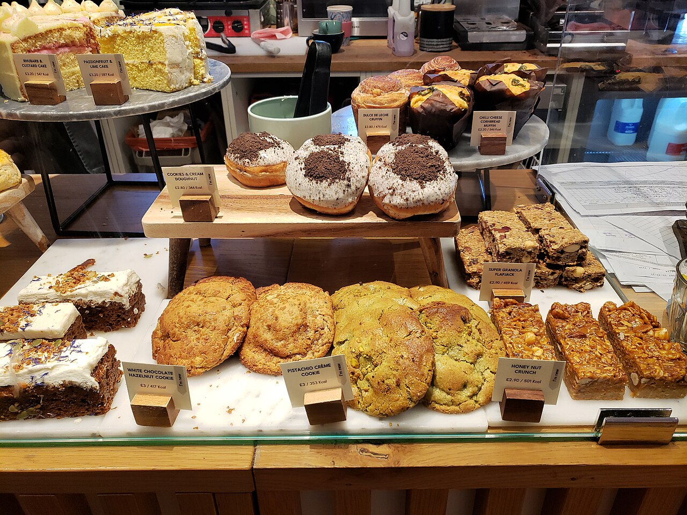

A small bakery with a big sweet tooth.
The Jam Jar Bakery has been baking in Bury since 2016 - proper homemade cakes, made by people who love feeding people.
From our oven to your table
What started as a love of home baking became a bakery that Bury calls its own. Everything we sell is made by hand, in small batches, the way you would make it at home - just more of it.
You will find us at Rawtenstall Market Hall, on local cafe counters through our wholesale bakes, and on doorsteps across Bury with free home delivery.
However you find us, the promise is the same: honest ingredients, generous slices, and cake that tastes like cake should.

The bakery in numbers

Baked around your needs
Nobody should miss out on cake. Tell us your dietary needs when you order and we will bake around them - it is how we have always worked, and it is why so many of our customers come back.
The same goes for our wholesale partners: cafes and shops across the area count on us for bakes their customers ask for by name.